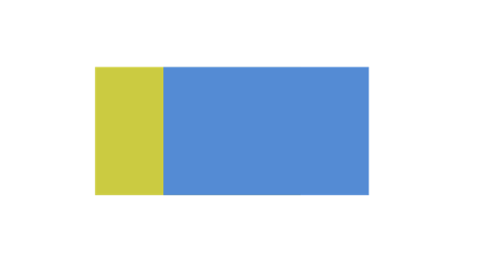

Open Source Licensing
An Introduction
Open Source Licensing
Presentation outline
- Basic intellectual property law
- (Very) basic software
- History and philosophy of open source
- General outline of types of open source licenses
- Analysis of individual licenses
- Risks and benefits of open source
- The open source idea in other contexts
- Conclusion
Part I
Basic Intellectual Property Law
What is intellectual property?
“Intellectual property refers to creations of the mind: inventions, literary and artistic works, and symbols, names, images, and designs used in commerce.”
What is Intellectual Property?, World Intellectual Property Organization (WIPO), http://www.wipo.int/about-ip/en/
There are three types of intellectual property
- Expressions
- Ideas
- Unique commercial identifiers
Copyright Law
Protecting Expressions
What is the Legal Basis of Copyright Law?
- U.S. Const. Art. 1 § 8 Cl. 8.
- The Copyright Act, 17 U.S.C. §§ 101 et seq.
- The Berne Convention for the Protection of Literary and Artistic Works
What is copyrightable?
“[O]riginal works of authorship fixed in any tangible medium of expression, now known or later developed, from which they can be perceived, reproduced, or otherwise communicated, either directly or with the aid of a machine or device.”
17 U.S.C. § 102.
How does a work become copyrighted?
As soon as a work is fixed in a tangible medium, copyright subsists.
What protections does copyright law provide?
A copyright holder has the exclusive right:
- To make copies of the work
- To prepare derivative works
- To distribute copies of the original work or derivative works
- For certain types of works, to perform the work
- For certain types of works, to perform the work
17 USC § 106
Copies
- The original is the first copy
- Any duplicate is a copy
- All instances of a software program are copies
- All open source licenses grant the right to make copies
- There is no limitation on the means made to make a copy
Derivative Works
“[A] work based upon one or more preexisting works, such as a translation . . . or any other form in which a work may be recast, transformed, or adapted.”
17 U.S.C. § 101.
Collective Works
“A work . . . in which a number of contributions, constituting separate and independent works in themselves, are assembled into a collective whole.”
17 U.S.C. § 101.
Joint Works
“A ‘joint work’ is a work prepared by two or more authors with the intention that their contributions be merged into inseparable or interdependent parts of a unitary whole.”
17 U.S.C. § 101.
Copyright Chain of Title
“The copyright in a compilation or derivative work extends only to the material contributed by the author of such work, and does not imply any exclusive right in the preexisting material.
The copyright in such work is independent of, and does not affect or enlarge the scope, duration, ownership, or subsistence of, any copyright protection in the existing material.”
17 U.S.C. § 103.
Copyright concepts in software
- Basic rule = copyright protects creative works
- Copyright generally applies to literary works, such as books, movies, pictures, music, maps
- Software is protected by copyright, not the functionality (that’s protected by patents) but the expression (creativity in implementation details)
- The copyright owner only has control over the work that he or she created, not someone else’s independent creation
Copyright Exceptions for Software
- The owner of a copy has a right to make a copy; would otherwise be useless
- The owner of a copy has a right to make a copy for archival purposes.
Patent Law
Protecting Ideas
What is the legal basis for patent law?
- U.S. Const. Art. 1 § 8 Cl. 8.
- The U.S. Patent Act, 35 U.S.C. §§ 1 et seq.
What is patentable?
- “[A]ny new and useful process, machine, manufacture, composition of matter, or any new and useful improvement thereof.” 17 U.S.C. § 101
- Must be novel, useful, and non obvious and be patentable subject matter.
How does a work become patented?
Obtaining a patent is difficult and time consuming. An inventor must file a patent application with the patent office in every country in which he or she wishes to have a patent. The patent may be later overturned by a court if it is insufficient.
What protections does patent law provide?
- Gives patent holder right to exclude others from:
- Making anything with his or her invention
- Using anything embodying his or her invention
- Selling or offering to sell anything embodying his or her invention
- Importing anything embodying his or her invention
Patent Chain of Title
- Only one patent owner for any work
- There is no open source definition for patent licenses
Patent concepts in software
- Patents protect functionality - this can include a method of operation, such as a computer program
- Does not protect abstract ideas, laws of nature
- The patent owner has the right to stop anybody from exercising that functionality, regardless of independent creation
- Other parties who want to use the technology may seek a patent license (which may grant rights to use, make, have made, sell, offer for sale, and import the technology)
Assigning Ownership
- Transferring ownership of a copyright, patent or trademark itself, not merely rights associated with it
- Not usually helpful for open source; an open source license generally provides the same protections that an assignment of ownership would.
Trademarks
Protecting unique commercial identifiers
What is the legal basis for trademark protection?
- The U.S. Trademark Act, 15 U.S.C. §§ 1501 et seq.
- The common law
What is a trademark?
The unique identifying mark that distinguishes the goods or services of one merchant from those of another.
What protections does trademark law provide?
- Keeps other merchants from using another merchant’s unique identifying mark.
Licenses
What is a license?
- Grants permission to use a copyrighted work
- Can grant any or all of the rights associated with copyright
- Can impose other restrictions, such as type or place or usage, or duration of the license
- Does not transfer ownership of the copyright
- licensed, not sold
Licenses
- A “license” is the way a copyright or patent holder gives permission or rights to someone else
- The license can be limited to:
- Types of use allowed (distribution, derivative works / to make, have made, manufacture)
- Exclusive or non-exclusive terms
- Geographical scope
- Perpetual or time limited duration
Licenses
- The license can have conditions on the grants, meaning you only get the license if you comply with certain obligations
- E.g, provide attribution, give a reciprocal license
- May also include contractual terms regarding warranties, indemnification, support, upgrade, maintenance
Contracts
- Must have three things:
- Offer
- Acceptance
- Consideration
Rights in Copyright
Check Your Understanding
- What type of material does copyright law protect?
- What copyright rights are most important for software?
- Can software be subject to a patent?
- Does a patent give rights to the patent owner?
- If you independently develop your own software, is it possible that you might need a copyright license from a third party for that software? A patent license?
Part II
Software Basics
Software
“[A] general term used to describe a collection of computer programs, procedure and documentation that perform some tasks on a computer system.”
Wikipedia.
Hardware
The physical parts of a computer, as opposed to software, which exists inside the computer
There are two types of code for software
- Object code
- Source code
Source Code
- “Programming statements created by a programmer.”
- In human readable form
- Easy to modify
- Most license agreements do not allow for access to source code
- Programmers use a compiler to turn it into object code
Object Code
- Also called executable code
- “The instruction sequence for the computer processor.”
- Not human readable
- Most software is distributed in object code form
Part III
Open Source Software
What is open source software?
- Open source software is software that is subject to an open source license.
- An open source licensor must give the licensee certain rights to be considered open source
- Basically, the licensee has the right to use, modify or distribute the software, and the right to access the source code.
Contrast to “Proprietary” or “Commercial” Software
- Hold source code as trade secret
- Code distributed in object code form
- Limited derivative works rights licensed
Shared Source
- The right to access the source code.
- The licensee has the right to use, no modify or distribute the software
Is it the same as free software?
- Generally yes
- Free software was the original name
- Open source began being used to allay the concerns of proprietary software companies that were thinking of utilizing or developing free software
Prominent Open Source Programs
- Apache Web Server
- Mozilla and Firefox web browsers
- Linux
- BIND
- MySQL
Prominent Open Source Vendors
- IBM
- Red Hat
- Sun Microsystems
The History of Open Source
- Richard Stallman, the GNU operating System, the Free Software Foundation, and the General Public License (GPL)
- Bill Joy, UNIX and the Berkeley Software Distribution License (BSD)
- Open source comes of age – Linux, Mozilla, Apache et al., and the corporate licenses
- The Open Source Initiative
What are the OSI and the OSD?
- The Open Source Initiative (OSI) is the de facto standards body for open source software. It determines what open source means, and approves licenses as being open source
- The Open Source Definition (OSD) is a set of criteria that a license must conform to to be considered open source. The OSI maintains the definition and changes it from time to time.
The Open Source Definition
- Free Redistribution. “The license shall not restrict any party from selling or giving away the software as a component of an aggregate software distribution containing programs from several different sources, The license shall not require royalty or other fee for such sale.”
- Source Code. “The program must include source code, and must allow distribution in source code as well as compiled form. Where some form of a product is not distributed with source code, there must be a well publicized means of obtaining the source code for no more than a reasonable reproduction cost, preferably, downloading via the Internet without charge. The source code must be the preferred form in which a programmer would modify the program.
- …Deliberately obfuscated source code is not allowed. Intermediate forms such as the output of a preprocessor or translator are not allowed.”
- Derived Works. “The license must allow modifications and derived works, and must allow them to be distributed under the same terms as the license of the original software.”
- Integrity of the Author’s Source Code. “The license may restrict source-code from being distributed in modified form only if the license allows the distribution of ‘patch files’ with the source code for the purpose of modifying the program at build time. The license must explicitly permit distribution of software built from modified source code. The license may require derived works to carry a different name or version number from the original software.”
- No Discrimination Against Persons or Groups. “The license must not discriminate against any person or group of persons.”
- No Discrimination Against Fields of Endeavor. “The license must not restrict anyone from making use of the program in a specific field of endeavor. For example, it may not restrict the program from being used in a business, or from being used in genetic research”
- Distribution of License. “The rights attached to the program must apply to all to whom the program is redistributed without the need for execution of an additional license by those parties.”
- License Must Not Be Specific to a Product. “The rights attached to the program must not depend on the program’s being part of a particular software distribution. If the program is extracted from that distribution and used or distributed within the terms of the program’s license, all parties to whom the program is redistributed should have the same rights as those that are granted in conjunction with the original software distribution.”
- License Must Not Contaminate Other Software. “The license must not place restrictions on other software that is distributed along with the licensed software. For example, the license must not insist that all other programs distributed on the same medium must be open-source software.”
- License Must Be Technology Neutral. “No provision of the license may be predicated on any individual technology or style of interface.”
Part IV
Open Source Licenses In General
Permissive FOSS Licenses
- Permissive FOSS license - a term used often to describe minimally restrictive FOSS licenses
- Example: BSD-3-Clause
- The BSD license is an example of a permissive license that allows unlimited redistribution for any purpose as long as its copyright notices and the license’s disclaimers of warranty are maintained
- The license contains a clause restricting use of the names of contributors for endorsement of a derived work without specific permission
- Other examples: MIT, Apache-2.0
License Reciprocity & Copyleft Licenses
- Some licenses require the distribution of derivative works (or software in the same file, same program or other boundary) under the same terms as the original work
- This is referred to as a “copyleft”, “reciprocal”, or “hereditary” effect
- Example of license reciprocity from the GPL-2.0: “You must cause any work that you distribute or publish, that in whole or in part contains or is derived from the Program or any part thereof, to be licensed…under the terms of this License.”
- Examples: all versions of GPL, LGPL, AGPL, MPL, CDDL
There are several types of software licenses
- The GPL, or “copyleft” family of licenses
- The BSD/academic family of licenses
- The Mozilla/corporate type licenses
- Other open source licenses
- Traditional proprietary licenses
- Shareware/freeware
- Public domain (not a license, but a way of accessing software)
Software license scope
The GPL family of licenses
- Basic rights under the GPL – access to source code, right to make derivative works
- “Copyleft”
- The Library or Lesser General Public License
The BSD family of licenses
- Same basic rights as GPL
- No copyleft provisions, i.e. licensees can take software licensed under the BSD private
- Can re-release software under a different license
Mozilla/corporate licenses
- More expertly drafted
- Serve as a model for later commercial licenses
- Different provisions on relicensing
- No copyleft
Other Open Source Licenses
- There are over 50 other open source licenses
- The IBM Common Public License, the MIT X license, and the Artistic License are examples
- The open source community discourages writing one’s own license in order to prevent license proliferation
Shareware/Freeware
- May be free or may not
- Licensor does not provide the right to make derivative works or give access to source code
Public Domain
- Author retains no copyright rights if software is in the public domain
- Open source software authors retain copyright rights
- Open source licenses contain restrictions, just different ones than licensees may be used to
- The restrictions in open source licenses are based on copyright law and depend on it for their effectiveness.
Part V
Some Specific Open Source Licenses
The GNU General Public License (GPL)
- Part license, part manifesto
- Reciprocity/Copyleft
- Purpose is to increase amount of publicly available software and ensure compatibility
- Licensees have right to modify, use or distribute software, and to access the source code
Problems with the GPL
- Linking to GPL programs
- No explicit patent grant
- Does no discuss trademark rights
- Does not discuss duration
- Silent on sublicensing
- Relies exclusively on license law, not contract
The Library or Lesser General Public License (LGPL)
- Written to deal with the linking problem in the GPL discussed above
- Provides that programs that merely link to a program in a library are not subject to copyleft
- If licensee makes a derivative work of the library, copyleft applies
The Berkeley Software Distribution License (BSD)
- No copyleft/reciprocity provision
- Does not mention patents
Other BSD type academic licenses
- MIT
- Apache
- Artistic License
The Mozilla Public License (MPL)
- Professionally written
- Includes an explicit patent grant, including a reciprocal grant for contributors
- Includes many specific provisions that are absent in the GPL and BSD but which are often in licenses.
The Common Public License (CPL)
- Developed and owned by IBM
- Includes a limited patent license
- Contains a reciprocity provision
- Contains a patent defense provision
- Indemnity provision
The Open Source License and the Academic Free License
- Mirror images of each other, except the AFL does not include reciprocity provisions and the OSL does
- Addresses aspects of copyright left out by other licenses, such as scope and duration
- Grants a patent license
- Retains name and trademark of licensor
License Compatibility
- License compatibility is the process of ensuring that license terms do not conflict. If one license requires you to do something and another prohibits doing that, the licenses conflict and are not compatible
[if the combination of the two software modules trigger the obligations under a license; for example,GPLv2 extends its obligations to “derivative works” and if a second software module is combined with a GPLv2 licensed module that is not a derivative work of the GPLv2 licensed module, the second software module is not subject to GPLv2. The definition of “derivative work” is subject to different views in the FOSS community]
The Free Software Foundation provides the following example to illustrate a case of license compatibility:
A license p is compatible with a license q (or is q-compatible) if
A work licensed under p can be distributed under the terms of q.
Example: GPL compatibility
- Many of the FOSS licenses, such as the MIT license and the LGPL, are GPL-compatible, meaning that their source code can be combined with source code that is licensed under the GPL without conflict; the new program resulting from the combination would have to be licensed under the GPL.
- Other FOSS and proprietary software licenses are not GPL-compatible since they have conflicting terms and conditions, but such inconsistency is only important if these programs are combined in a way which creates a derivative work with the GPLv2 software.
Notices
Notices, such as text in comments in file headers, often provide authorship and licensing information. FOSS licenses may also require the placement of notices in source code or documentation to give credit to the author (an attribution) or to make it clear the software includes modifications.
Notices
- Copyright notice - an identifier placed on copies of the work to inform the world of copyright ownership. Example: Copyright © A. Person (2016).
- License notice - a notice that acknowledges the license terms and conditions of the FOSS included in the product.
- Attribution notice - a notice included in the product release that acknowledges the identity of the original authors of the FOSS included in the product.
- Modification notice – a notice that you have made modifications to the source code of a file, such as adding your copyright notice to the top of the file.
Multiple Licensing and other strategies
- Microsoft’s Shared Source License
- Public Source
- Multiple Licensing
- Licensing in phases
Check Your Understanding
- What is a FOSS license?
- What are typical obligations of a permissive FOSS license?
- Name some permissive FOSS licenses.
- What does license reciprocity mean?
- Name some copyleft-style licenses.
- Are Freeware and Shareware software considered FOSS?
- What is a multi-license?
Part VI
Risks and Benefits of Open Source Software
Legal Risks
- Intellectual property infringement
- No warranties
- Copyleft
- Copyright attribution and notice requirements
- Enforcement
- Ambiguous license terms
- Consumer protection laws
- License management
- Licenses have not been construed by an American Court
- Licenses may be revocable
- Uncertain interpretation
- Forking (not a legal risk, but still a risk)
Benefits
- Increased user base
- Longer useful life
- Increased stability
- Security
- Scalability
- Innovation
- Cost
- Adaptability
How do you want to use to the component?
Common scenarios include:
- Incorporation
- Linking
- Modification
- Translation
Incorporation

A developer may copy portions of a FOSS component into your software product.
Relevant terms include:
- Integrating
- Merging
- Pasting
- Adapting
- Inserting
Linking

A developer may link or join a FOSS component with your software product.
Relevant terms include:
- Static/Dynamic Linking
- Pairing
- Combining
- Utilizing
- Packaging
- Creating interdependency
Modification
A developer may make changes to a FOSS component, including:
- Adding/injecting new code into the FOSS component
- Fixing, optimizing or making changes to the FOSS component
- Deleting or removing code
Translation
A developer may transform the code from one state to another.
Examples include:
- Translating Chinese to English
- Converting C++ to Java
- Compiling VHDL in a mask or net list
- Compiling into binary
Development Tools
Development tools may perform some of these operations behind the scenes.
For example, a tool may inject portions of its own code into output of the tool.
How is the FOSS component distributed?
- Who receives the software?
- Customer/Partner
- Community project
- What format for delivery?
- Source code delivery
- Binary delivery
- Pre-loaded onto hardware
Check Your Understanding
- What information is helpful in understanding how software is licensed?
- What information helps identify who is licensing the software?
- What is incorporation?
- What is modification?
- What is linking?
- What is translation?
- What factors are important in assessing a distribution?
How do licensors make money with open source software?
Usually by providing other services, such as:
- Support
- Training
- Customization
- Integration
- Certification
- Offering warranties
Open source software as a business
- “Think ‘free speech,’ not ‘free beer’” Richard Stallman
- Branded distributions
- Sell hardware, give away software
- Sell services and support
- Dual versions
- Dual licensing
- Value added software
- Sell sponsorships
- Sell ads and T-shirts
Part VII
The Open Source Idea in Other Contexts
Open Content
- “Describes any kind of creative work published in a format that explicitly allows copying and modifying of its information by anyone, not exclusively by a closed organization, firm, or individual.”
From Wikipedia, the world’s largest open source project.
Creative Commons
- Creative Commons Licenses
- Baseline rights
- Various Licenses
- Creative Commons International
Creative Commons
Creative Commons licenses are the best choice for most all of your content. All CC licenses require attribution. http://creativecommons.org/licenses/
CC BY: Allows others to distribute, remix, tweak, and build on your work, even commercially.
CC BY-SA: Allows others to distribute, remix, tweak, and build on your work, even commercially, and they must license their new creations under the same terms.
Creative Commons
CC BY-ND: Allows for redistribution, commercial or non-commercial use, but they can’t change the work.
CC BY-NC: Allows others to distribute, remix, tweak, and build on your work, even non-commercially. Their new works must be non-commercial, but they can license them under different terms.
Creative Commons
CC BY-NC-SA: Allows others to distribute, remix, tweak, and build on your work, non-commercially, and they must license their new creations under the same terms.
CC BY-NC-ND: Others can only download and share your works.
Creative Commons
The Creative Commons Zero (CC0) is a public domain dedication which can be used if you wish to permanently surrender your copyright and related rights to your work, with no attribution. It can be used for all types of content.
Other Open Content Organizations
- Creative Commons International http://creativecommons.org/international/
- Science Commons (a Creative Commons Project) http://sceincecommons.org
- Open Educational Resources Commons (OER) http://www.oercommons.org/
Other Open Content Organizations
- Open Content http://www.opencontent.org/
- For more see the Google Directory, http://www.google.com/Top/Computers/Open_Source/Open_Content/ (providing a list of websites dedicated to open source)
Other open content licenses include
- GNU Free Documentation License
- Open Content License
- Free Art License
- Open Game License
- October Open Game License
Considerations before licensing with Creative Commons or other open content license
- Make sure you understand what rights you are retaining and which ones you are giving up
- Make sure you own the copyright
- Make sure your work is subject to copyright law
- “Be specific about what you are licensing” (creative commons FAQs)
Part VIII
Further Reading
Quick Overview
- Lawrence Rosen, Open Source Licensing: Software Freedom and Intellectual Property Law (Prentice Hall Professional and Technical Reference 2004), available at http://www.rosenlaw.com/oslbook.htm. The best book on open source licensing. Gives an in-depth but not overly detailed overview of issues regarding open source licensing. Includes the text of some o the more popular open source licenses and point-by-point analysis of some of the most important licenses.
- http://www.opensource.org - the online home of the Open Source Initiative, the de facto standards body of the open source movement. Provides a list of and the text of all OSI approved licenses. Sets out the open source principles, answers frequently asked questions, and provides helpful links
Dennis M. Kennedy, A Primer on Open Source Licensing Legal Issues: Copyright, Copyleft and Copyfuture, (2001), available at http://www.denniskennedy.com/opensourcedmk.pdf.
http://creativecommons.org - the open source idea in non software contexts
On the business issues
- Eric S. Raymond, The Magic Cauldron, available at http://www.catb.org/~esr/writings/magic-cauldron/magic-cauldron.html, (discussing how to make money on open source)
- David A. Wheeler, “Why Open Source Software/Free Software (OSS/FS, FLOSS, of FOSS)? Look at the Numbers!,” available at http://www.dwheeler.com/oss_fs_why.html#history (reviewing literature on and discussing the benefits of open source versus proprietary software)
Lists of open source projects
On open source software generally
- Eric S. Raymond, The Cathedral and the Bazaar: Musings on Linux and Open Source by an Accidental Revolutionary (O’Reilly Media 2001), available at http://www.catb.org/~esr/writings/cathedral-bazaar/
Part IX
Conclusion
Like anything else, open source has both risks and benefits (for licensors and licensees)
They are neither an unmitigated good, nor particularly dangerous. Before using them, either to license your work or accepting work subject to them, you should evaluate your own situation and make an individual determination. General information cannot take into account your particular circumstances
And on a similar note, remember…
This presentation is not legal advice. Legal advice can only be provided with regards to specific factual circumstances in the context of an attorney-client relationship. This presentation does not establish an attorney-client relationship.